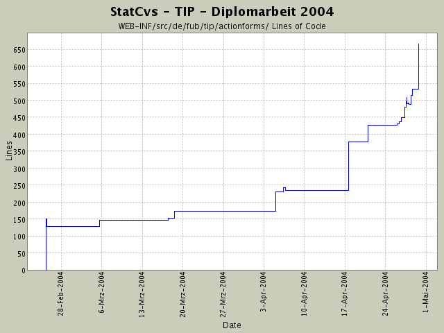

Summary Period: 2004-02-25 to 2004-04-29
[root]/WEB-INF/src/de/fub/tip/actionforms

Total Lines Of Code:
563 (2004-06-13 13:05)
| Author | Changes | Lines of Code | Lines per Change |
|---|---|---|---|
| hirsch | 46 (100.0%) | 970 (100.0%) | 21.0 |
enternt aus CVS
0 lines of code changed in:
umbenannt.
3 lines of code changed in:
ActionForm kann sowohl für die Anzeige des Themen- als auch des Sehenswürdigkeitsgruppenprofils benutzt werden.
133 lines of code changed in:
Umstellung auf neue Navigationsstruktur mit DispacthAction -
Debugging und TestActions sind ungenutzt!
Einfügen ein app.resources aus Bundle ... es geht voran!
21 lines of code changed in:
setSelection wird nicht aufgerufen ....
jetzt wird es per Hand vom Controller ausgelöst!
2 lines of code changed in:
beim Einfügen des names-Wertes (menge aller Sehenswuerdigkeitsgruppen) wird jetzt
auch automatisch selnames (gesetzte Häkchen) gesetzt.
65 lines of code changed in:
umstellung der ActionForm -> selnames wird jetzt ein String[] statt
einer Collection ...
4 lines of code changed in:
Debugging weiter ....
1 lines of code changed in:
Umbau und Umstellung auf Collection in ActionForm .
mal sehen, was passiert ;:-^
9 lines of code changed in:
Umbau in Richtung Collection-Klasse ...
33 lines of code changed in:
No collection Found wird gemeldet -
hinzufügen von diversen Logger-Statements zur fehlersuche
2 lines of code changed in:
stueckweise Umstellung auf neue Struktur zur MultiBoxANzeige
45 lines of code changed in:
Umbau der ActionForm - Anpassen an realere Sachen und
XP-Ansatz: startFromScratch()
30 lines of code changed in:
Versuch den Inhalt des MultiBoxFeldes in Action anzeigen zu lassen (logger)
2 lines of code changed in:
Pruefung, ob in den Klassen eine NullPointerException auftauchen kann,
da sie irgendwie nicht aufgerufen werden ...
die Logfiles sind zumindest leer.
2 lines of code changed in:
weitere Experimente mit der MultiBoxAnzeige
32 lines of code changed in:
ActionAusprobiererei
18 lines of code changed in:
neue ActionForm hinzugefügt für MultiBox-Anzeige ...
html:form entfernt aus JSP-Seite, da ich nur sehen will,
ob das überhaupt anzeigbar ist.
7 lines of code changed in:
Actions+ActionForms:
Umstellung der Fehlerabfrage - zuerst auf !=null prüfen,
danach auf länge>=0.
JSP-Seite:
Mit dem Struts-Tag scheint es Probleme zu geben.
Jetzt mal mit JSTL-EL probiert, um die Inhalte
anzuzeigen, die ich ja bereits mit einer reinen JSTL-Lösung am
Schirm gesehen habe ... leider ebend nur in Tabellen in
nicht als Haken-Box oder Auswahl.
14 lines of code changed in:
Während der Anzeige die size()-Funktion des gespeicherten Containers
zu benutzen scheitert ... es wird sändig eine Ausnahme
geworfen, die sagt, dass der namespace nicht richtig
ist für die Verwendung der Funktion.
Einstellen auf page und requestScope bringt keine Änderung
Weiterhin Versuch der erweiterten Anzeige der Themenauswahl ....
vll. muss ich eine andere Methode machen, die die Anzeige als
String[] macht ... das wäre aber schade!
8 lines of code changed in:
(24 more)
Generated by StatCvs v0.2-dev